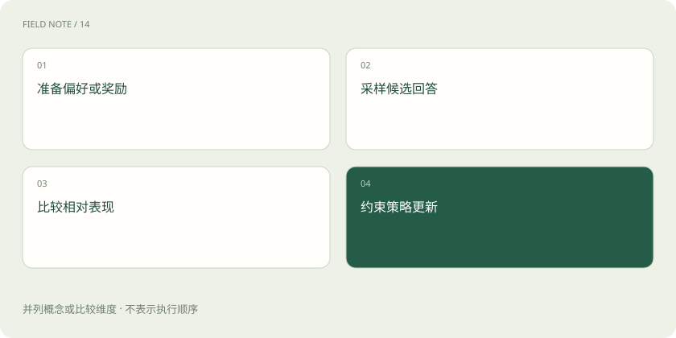

先读哪些知识
先用一个类比理解
像教练既示范标准动作，也比较不同动作的优劣。
类比只帮助建立直觉，不等同于技术的完整机制。
一图看懂

概念边界
偏好学习关注同一请求下哪种回答更合适。经典 RLHF 路线可先从人类比较训练奖励模型，再用强化学习调整策略；DPO 直接利用偏好对优化策略，避免显式运行同样的奖励建模加在线强化学习流程。
内部怎样运作
GRPO 通常对同一问题采样一组回答，利用组内奖励比较形成更新信号。奖励可以来自可验证规则或其他评价器，未必每一步都由人打分。奖励定义不好，模型可能学会迎合评分漏洞。
把机制放进具体场景
对同一退款请求，可以把“编造已退款”与“说明需要查询”组成偏好对。DPO可用这种已收集的比较训练；GRPO则通常从当前策略生成一组回答后计算相对奖励。若奖励只看礼貌程度，虚假的退款承诺也可能获得高分。
取舍与容易忽略的限制
偏好并不是脱离场景的唯一标准。简洁在咨询问答中可能更好，遇到安全操作却可能遗漏必要条件。优化还需要控制偏离原策略的程度，否则局部奖励增长可能伴随其他能力退化。训练前应明确奖励是在评价事实、风格还是可验证结果，避免把几种目标混成一个不透明分数。
放在一起对比
| 方式或概念 | 主要作用 | 关键边界 |
|---|---|---|
| 经典RLHF | 奖励模型加策略优化 | 奖励可能被投机 |
| DPO | 从偏好对直接优化 | 依赖偏好数据覆盖 |
| GRPO | 比较同题一组回答奖励 | 奖励设计至关重要 |
放进真实场景
SCENARIO
若比较者总偏爱长答案，模型可能学会重复解释来赢得排名。把内容正确性与冗余程度分别评判，比只问“更喜欢哪一个”更容易发现这种问题。
别踩这个误区
SFT 提供示范，偏好优化调整取舍；GRPO 并不保证推理正确，更不自动消除奖励投机。
想一想
GRPO 的奖励必须逐条由人类实时打分吗？
不必，奖励可以来自可验证规则或评价器，可靠性取决于这些信号是否符合目标。
关联阅读
资料与边界
本文为原创知识讲解。类比和图示经过简化；示例数字不代表实测或报价。整理日期：2026-11-04。文末列出对应技术的原始资料，具体功能与版本支持请以原文为准。